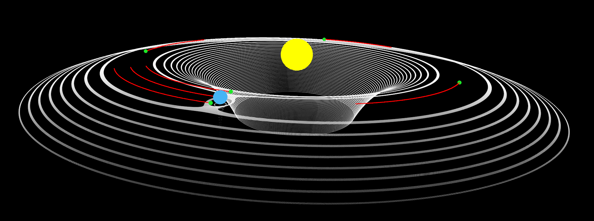
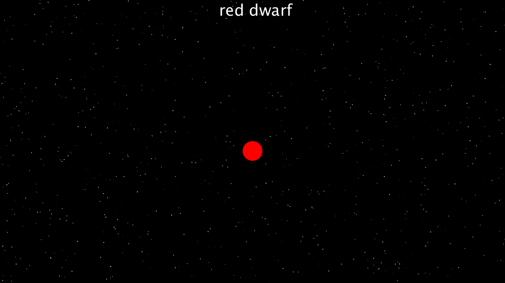
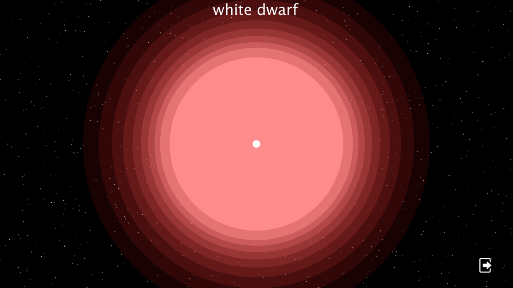
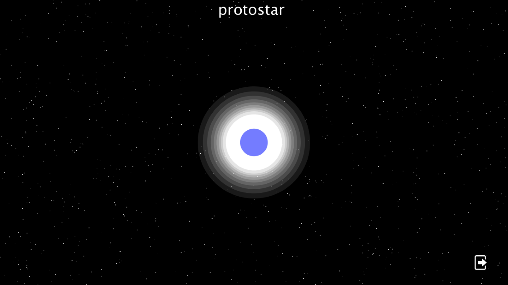
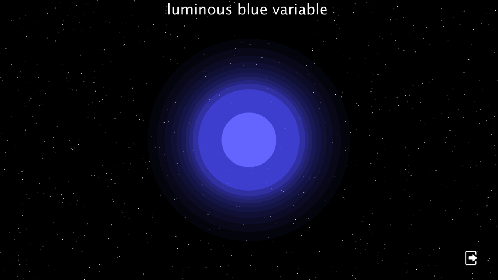
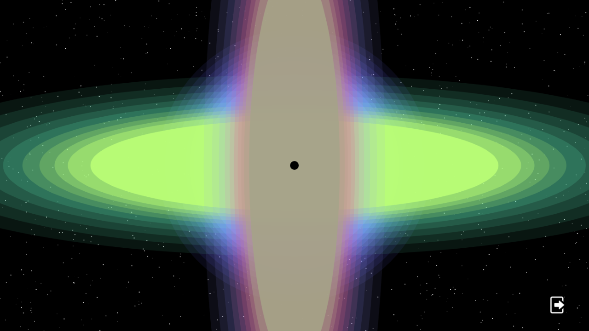
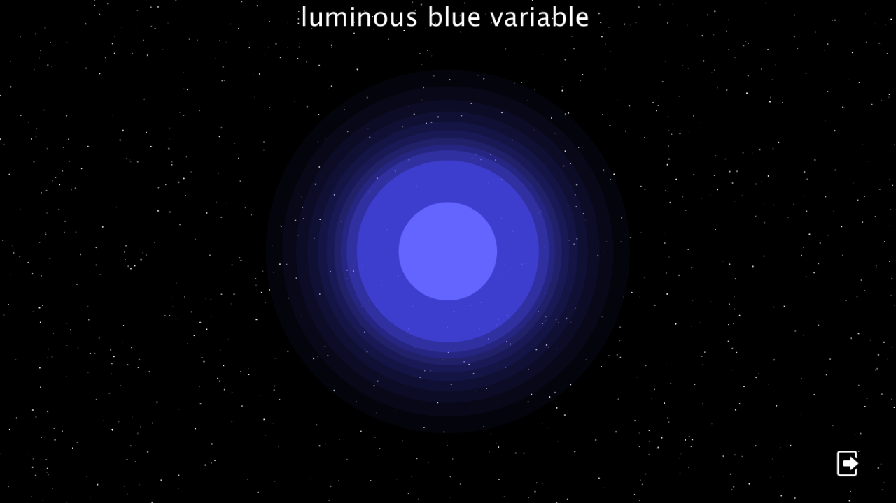
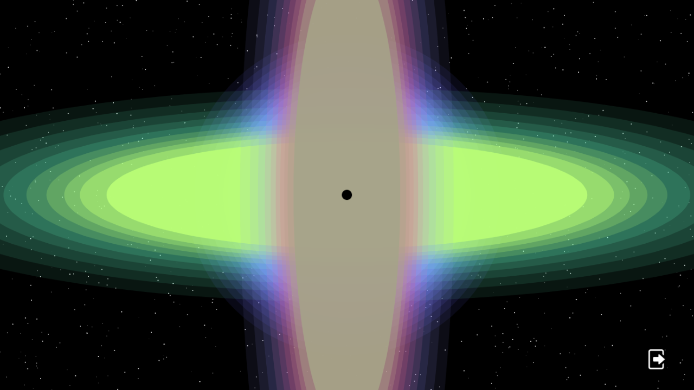
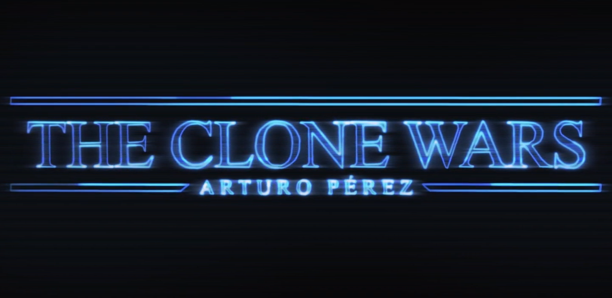

Arturo Pérez Roncero's hub
Scientific Software
Interplanetary Superhighway

What is it?
The Interplanetary Superhighway (IPS) is a set of pathways beetween planets and other bodies which require very little energy to pass through. They are delimited by the manifold created by every asymptotic trajectory which ends up in a halo orbit around one of the orbits. The Lagrangian points, the points where an object will maintain its position relative to other two much bigger objects, determine the gates beetween the pathways collected in the IPS. This is no coincidence, as halo orbits always have as centre of their trajectories the Lagrangian points L1 or L2.
How to find it
In order to calculate the IPS I first created a plane, where I placed the Earth (Blue sphere) and the Sun (Yellow sphere). I then recreated the three-body problem, or in other words, simulated the behaviour of the Sun, Earth and a third object. By assuming this third object had a negligible mass orbiting the sun at an angular velocity equal to Earth’s, and then changing its position to every possible point in the plane, I was able to graph the effective potential on said plane (white equipotential lines). This showed me the “gates” between planets, or Lagrangian points as I said earlier.
For a better understanding of the Lagrangian points, I placed 5 objects (Green spheres) on each of the points. Its trajectories are showed in red. The Lagrangian points L1 and L2 (the ones closest to the Earth) resulted in much more unstable trajectories around both the Sun and the Earth than the points L3, L4 and L5. However, although a bit calmer, the orbits of objects placed on L3 were still more unstable than those on L4 and L5.
My research on the topic is still in progress, but I will make sure to update my latest findings.
The Millennium Run
What is it?
The so called "Millennium Run" was a computer N-body simulation (a simulation of the behaviour of "N" particles under the influence of a certain force). Its goal was to find out how the universe evolved with time. Its results reinforced the Big Bang theory, closely resembling the Cosmological Background Radiation (CBR).
How to make it
I first tried simulating it using After Effects, which has a built in gravitational simulation. By modifying the default parameters and colors, I ended up with similar results.
I then decided to code the whole myself, and procedeed to write a gravitational simulator from scratch (Video on the right). I used 20,000 particles, instead of the over 13 billion the latest Millennium Run did, so my computer wouldn't collapse into a singularity. Still, the results were similar. At the very beginning we see a structure similar to that in the CBR, which later becomes a sort of net connecting big chunks of particles (like in the Millennium Run). Lastly, all the particles join in very big blobs, a possible future for our own universe.
I developed a 3D version too.
Electromagnetic simulators
Electric force simulator
I started with the basics, simulating the Coulomb force, and then plotting it onto a plane. I then simulated different experiments: two positive charges approaching (on the left), or one positive and one negative (on the right).
I developed a field line plotter too.
Finally, I tried plotting the equipotential lines of two colliding dipoles.
Lorentz force simulator
I became more and more interested in magnetism, after learning that it was, in fact, a relativistic consequence of the movement of charges. Trying to understand it, I coded a program which simulated the behaviour of particles (both positive and negative) approaching a magnetic dipole. The charge of the particles is randomly assigned, and the dipole is represented as a blues sphere, trying to mimic solar winds hitting Earth. The camera is rotating around Earth along one of its meridians.
Clifford Attractor
After finding out about attractors, I became more and more interested on differential equations. It doesn't matter if you believe in adeterministic or in a indeterministic universe, chaos theory contributes to everybody's view of reality, and so it did to me. I started studying and messing with it on my own, beginning with the Clifford attractor.
As Paul Bourke explains on this website: http://paulbourke.net/fractals/clifford/, the Clifford attractor, named after Clifford Pickover, is described by the following set of differential equations:
xn+1 = sin(a yn) + c cos(a xn)
yn+1 = sin(b xn) + d cos(b yn)
Where a, b, c, d are variables that define each attractor.
I then coded a simulator, which returned results as the following:
Lorenz Attractor
The Lorenz Attractor is a system of 3 partial differential equations, developed by Edward Lorenz in the 20th century. It defines the properties of a two-dimensional fluid uniformly heated from below and cooled from above. It is perhaps the most famous example of deterministic chaos, and it was not long before I got my hands on it. Here are the results:
Mandelbrot Set
I also tried simulating the Mandelbrot Set. If we iterate f(z)=z^2+c, the first term being a complex number equivalent to the coordinates in a 2-D plane, the resulting progression will converge or diverge. If we then colour the pixels which result in converging progressions, and them zoom on it as much as our non-super computer allows us, we will get something like this:
Stellar Evolution
A long, long time ago, in this galaxy, I decided to develop an app explaining the different paths a star could take depending on its mass. This was my first big project, and it took me months to finish. I was around 13, and was still learning programming, so don't expect too much. The app is still up on Google Play, and you can download it here. In case you don't want to, here are some snapshots and the trailer:
   



Videogame Development
The Clone Wars

A year ago I had the idea of developing a video game. I started working from scratch. After a couple of weeks I had all the main ideas clear: The game would be Star Wars themed, and its main goal would be to interact withfour different factions with opposing interests. Different characters would ask you questions or make demands,and depending on the answer you gave them, their satisfaction level would increase or decrease. If it reached its maximum or minimum, you lost the game. It released for Android on New Year's Eve, and in less than two months it got more than two thousand downloads.
It is currently anavailable on Play Store, but a copy of the APK can be found here:
In case you don't want to do that, here are some snapshots and the trailer, again:
Evolution
I had this idea of doing a game where you started playing as some species, and slowlly evolved into others, ending up in existing animals nowadays. That is basically what I ended up doing. In "Evolution" you can play as dinasaurs, seagulls, and worst of all: humans.
It is currently available on Play Store.
Kill Sebas
The name speaks for itself.
It is currently available on Play Store.